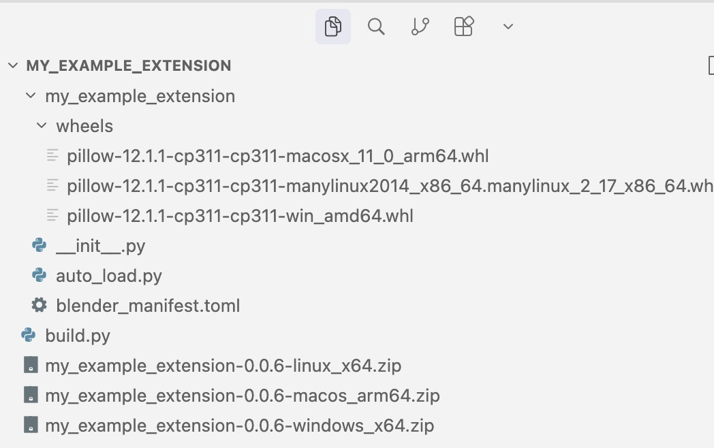
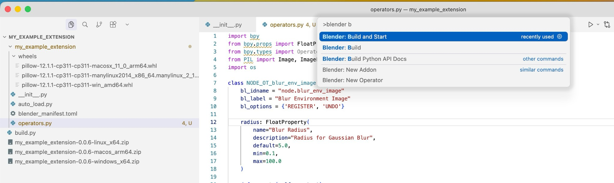

How to Build an Extension¶
This guide walks you through building a Blender extension from scratch. Extensions have been the standard way to distribute add-ons since Blender 4.2, available via the Extensions Platform.
The tutorial was written for Blender 5.0.1, using VS Code with the Blender Development extension.
Chapter 1: Create a New Add-on¶
To get started, open the Command Palette in VS Code and run Blender: New Addon.
When prompted, choose the with auto reload option.
This adds an auto_load.py script that automatically discovers every Panel, Operator, and PropertyGroup in your add-on, resolves their dependencies, and registers them in the correct order. It means you can simply drop new .py files into your project and they will be picked up without any manual wiring in __init__.py.

Chapter 2: Adding Python Dependencies with Wheels¶
Blender extensions can bundle third-party Python packages as .whl (wheel) files. The Python ecosystem has many well-maintained packages: e.g. Pillow for image manipulation, Requests for fetching data from the web, or NetworkX for creating and analyzing networks.
A build.py script automates the entire process: downloading platform-specific wheels, updating blender_manifest.toml, and packaging the extension. Simply add your dependencies to the script and run it with:
Place the build.py script one level above the directory where your add-on lives. Here is the full script:
build.py (click to expand)
# run with
# /Applications/Blender.app/Contents/MacOS/Blender -b -P build.py
import glob
import os
import subprocess
import sys
from dataclasses import dataclass
from typing import List, Union
import bpy
ADDON_NAME = "my_example_extension"
TOML_PATH = f"./{ADDON_NAME}/blender_manifest.toml"
WHL_PATH = f"./{ADDON_NAME}/wheels"
# Instead of reading from pyproject.toml, define the required packages here:
required_packages = [
"Pillow",
]
def run_python(args: str | List[str]):
python = os.path.realpath(sys.executable)
if isinstance(args, str):
args = [python] + args.split(" ")
elif isinstance(args, list):
args = [python] + args
else:
raise ValueError(
"Arguments must be a string to split into individual arguments by space"
"or a list of individual arguments already split"
)
subprocess.run(args)
try:
import tomlkit
except ModuleNotFoundError:
run_python("-m pip install tomlkit")
import tomlkit
@dataclass
class Platform:
pypi_suffix: str
metadata: str
# tags for blender metadata
# platforms = ["windows-x64", "macos-arm64", "linux-x64", "windows-arm64", "macos-x64"]
windows_x64 = Platform(pypi_suffix="win_amd64", metadata="windows-x64")
linux_x64 = Platform(pypi_suffix="manylinux2014_x86_64", metadata="linux-x64")
macos_arm = Platform(pypi_suffix="macosx_12_0_arm64", metadata="macos-arm64")
build_platforms = [
windows_x64,
linux_x64,
macos_arm,
]
def remove_whls():
for whl_file in glob.glob(os.path.join(WHL_PATH, "*.whl")):
os.remove(whl_file)
def download_whls(
platforms: Union[Platform, List[Platform]],
required_packages: List[str] = required_packages,
python_version="3.11",
clean: bool = True,
):
if isinstance(platforms, Platform):
platforms = [platforms]
if clean:
remove_whls()
for platform in platforms:
run_python(
f"-m pip download {' '.join(required_packages)} --dest {WHL_PATH} --only-binary=:all: --python-version={python_version} --platform={platform.pypi_suffix}"
)
def update_toml_whls(platforms):
# Define the path for wheel files
wheel_files = glob.glob(f"{WHL_PATH}/*.whl")
wheel_files.sort()
# Packages to remove
packages_to_remove = {
"certifi",
"charset_normalizer",
"idna",
"requests",
"urllib3",
}
# Filter out unwanted wheel files
to_remove = []
to_keep = []
for whl in wheel_files:
if any(pkg in whl for pkg in packages_to_remove):
to_remove.append(whl)
else:
to_keep.append(whl)
# Remove the unwanted wheel files from the filesystem
for whl in to_remove:
os.remove(whl)
# Load the TOML file
with open(TOML_PATH, "r") as file:
manifest = tomlkit.parse(file.read())
# Update the wheels list with the remaining wheel files
manifest["wheels"] = [f"./wheels/{os.path.basename(whl)}" for whl in to_keep]
# Simplify platform handling
if not isinstance(platforms, list):
platforms = [platforms]
manifest["platforms"] = [p.metadata for p in platforms]
# Write the updated TOML file
with open(TOML_PATH, "w") as file:
file.write(
tomlkit.dumps(manifest)
.replace('["', '[\n\t"')
.replace("\\\\", "/")
.replace('", "', '",\n\t"')
.replace('"]', '",\n]')
)
def clean_files(suffix: str = ".blend1") -> None:
pattern_to_remove = f"./**/*{suffix}"
for blend1_file in glob.glob(pattern_to_remove, recursive=True):
os.remove(blend1_file)
def build_extension(split: bool = True) -> None:
for suffix in [".blend1", ".MNSession"]:
clean_files(suffix=suffix)
if split:
subprocess.run(
f"{bpy.app.binary_path} --command extension build"
f" --split-platforms --source-dir {ADDON_NAME} --output-dir ".split(" ")
)
else:
subprocess.run(
f"{bpy.app.binary_path} --command extension build "
f"--source-dir {ADDON_NAME} --output-dir .".split(" ")
)
def build(platform) -> None:
download_whls(platform)
update_toml_whls(platform)
build_extension()
def main():
# for platform in build_platforms:
# build(platform)
build(build_platforms)
if __name__ == "__main__":
main()
For example, when adding Pillow as a dependency, this is how the folder structure would look after running build.py — with platform-specific .whl files in a wheels folder and the final .zip packages ready for upload:

Chapter 3: Adding an Operator¶
To add functionality to your add-on, create an Operator. Thanks to auto_load.py, you can simply add a new file — e.g. operators.py — and it will be automatically discovered and registered.
Since we bundled Pillow as a wheel in Chapter 2, we can now use from PIL import Image, ImageFilter directly in our add-on code.
Example operator: operators.py (click to expand)
import bpy
from bpy.props import FloatProperty
from bpy.types import Operator
from PIL import Image, ImageFilter
import os
class NODE_OT_blur_env_image(bpy.types.Operator):
bl_idname = "node.blur_env_image"
bl_label = "Blur Environment Image"
bl_options = {'REGISTER', 'UNDO'}
radius: FloatProperty(
name="Blur Radius",
description="Radius for Gaussian Blur",
default=5.0,
min=0.1,
max=100.0
)
def execute(self, context):
world = context.scene.world
if not (world and world.node_tree):
self.report({'ERROR'}, "No world node tree found.")
return {'CANCELLED'}
nodes = world.node_tree.nodes
selected_nodes = [n for n in nodes if n.select]
if not selected_nodes:
self.report({'ERROR'}, "No node selected.")
return {'CANCELLED'}
node = selected_nodes[0]
if not hasattr(node, "image") and node.image and node.image.filepath:
self.report({'ERROR'}, "Selected node is not an image node or has no image.")
return {'CANCELLED'}
img_path = bpy.path.abspath(node.image.filepath)
try:
img = Image.open(img_path)
blurred = img.filter(ImageFilter.GaussianBlur(radius=self.radius))
base, ext = os.path.splitext(img_path)
blurred_path = base + "_blurred" + ext
blurred.save(blurred_path)
env_node = nodes.new(type='ShaderNodeTexEnvironment')
env_node.location = (node.location[0], node.location[1] - 300)
env_node.image = bpy.data.images.load(blurred_path)
except Exception as e:
self.report({'ERROR'}, f"Error processing image: {e}")
return {'CANCELLED'}
return {'FINISHED'}
def invoke(self, context, event):
return context.window_manager.invoke_props_dialog(self)
Now we can test the add-on by running Blender: Build and Start from the Command Palette.

When Blender starts, search for "blur" in the operator search menu — the Blur Environment Image operator will show up. Select an environment texture node, run the operator, and it will successfully blur the texture using Pillow:

Chapter 4: Upload the Extension¶
With everything in place, bump the version field in blender_manifest.toml and run build.py again to produce new .zip files — one per platform:

The resulting .zip files can then be uploaded to the Blender Extensions Platform.